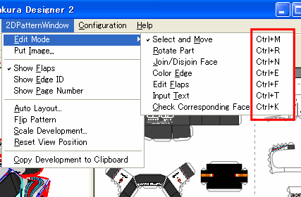

Tips
Short Cut
It is convenient to use short cuts for switching between the edit-mode. The
keys of the short cuts are shown on the right side of the menu; a simple right
click opens a pop-up menu.

Move parts
You can move parts in any edit-mode. For example, you can drag and move a part
when edit mode is [Part Rotate] or [Edit Flap] and so on.
You can move selected part slightly by pressing cursor keys.
Image layout
You can place jpeg or bmp images on the 2D pattern. The images can be placed
under or over developments. The depth order can be changed by right clicking.
The size is adjusted by dragging one of the corners. When the [Ctrl] key is
pressed, the aspect ratio of the image is maintained.
Multiple parts selection
Multiple parts can be selected by specifying a select area. The area is
specified by a mouse click and drag. This area selection can be used in [Color
Edges] mode for selecting multiple edges at a time.
Or you can select multiple parts by clicking the parts by pressing the [Shift]
key.